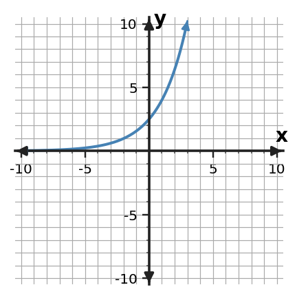
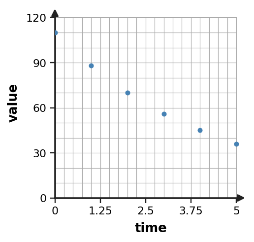
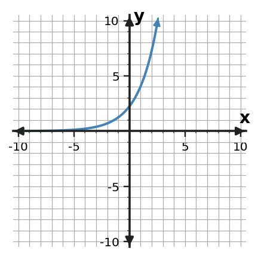

Choose the most appropriate function family for the table and support the choice with a difference pattern.
| $x$ | -2 | -1 | 0 | 1 | 2 |
|---|---|---|---|---|---|
| $y$ | 3 | 0 | -1 | 0 | 3 |
1Choose the most appropriate function family for the table and support the choice with a difference pattern.
| 2Choose the most appropriate function family for the table and support the choice with a ratio pattern.
| ||||||||||||||||||||||
3A storage tank is filling at a steady rate. The table shows the measured volume. A student proposes $V(t)=3t+4$. Decide whether the model is reasonable for the shown data and give two pieces of evidence.
| 4A quantity triples every hour. Choose a linear, quadratic, or exponential model and name the behavior that supports your choice. |
Choose the most appropriate function family for the table and support the choice with a difference pattern.
| $x$ | -2 | -1 | 0 | 1 | 2 |
|---|---|---|---|---|---|
| $y$ | 3 | 0 | -1 | 0 | 3 |
Choose the most appropriate function family for the table and support the choice with a ratio pattern.
| $x$ | 0 | 1 | 2 | 3 |
|---|---|---|---|---|
| $y$ | 6 | 12 | 24 | 48 |
A storage tank is filling at a steady rate. The table shows the measured volume. A student proposes $V(t)=3t+4$. Decide whether the model is reasonable for the shown data and give two pieces of evidence.
| $t$ | 0 | 1 | 2 | 3 |
|---|---|---|---|---|
| $V$ | 4 | 7 | 10 | 13 |
A quantity triples every hour. Choose a linear, quadratic, or exponential model and name the behavior that supports your choice.
Classify $y=2x^2-7$ as linear, quadratic, or exponential. Name one structural clue in the equation.
Choose the most appropriate function family for the table and support the choice with a difference pattern.
| $x$ | -2 | -1 | 0 | 1 | 2 |
|---|---|---|---|---|---|
| $y$ | 5 | 2 | 1 | 2 | 5 |
A culture is multiplied by 1.5 every hour. Choose a linear, quadratic, or exponential model and name the behavior that supports your choice.
Choose the most appropriate function family for the table and support the choice with a ratio pattern.
| $x$ | 0 | 1 | 2 | 3 |
|---|---|---|---|---|
| $y$ | 4 | 2 | 1 | 0.5 |
Choose the most appropriate function family for the table and support the choice with a ratio pattern.
| $x$ | 0 | 1 | 2 | 3 |
|---|---|---|---|---|
| $y$ | 27 | 9 | 3 | 1 |
A bacteria sample is multiplied by 1.8 every hour. Choose a linear, quadratic, or exponential model and name the behavior that supports your choice.
Choose the most appropriate function family for the table and support the choice with a difference pattern.
| $x$ | -2 | -1 | 0 | 1 | 2 |
|---|---|---|---|---|---|
| $y$ | 2 | 5 | 6 | 5 | 2 |
Classify $y=-3x+8$ as linear, quadratic, or exponential. Name one structural clue in the equation.
The height of a tossed ball rises and then falls. Choose a linear, quadratic, or exponential model and name the behavior that supports your choice.
Classify $y=-2x^2+5$ as linear, quadratic, or exponential. Name one structural clue in the equation.
Choose the most appropriate function family for the table and support the choice with a ratio pattern.
| $x$ | 0 | 1 | 2 | 3 |
|---|---|---|---|---|
| $y$ | 4 | 6 | 9 | 13.5 |
Choose the most appropriate function family for the table and support the choice with a difference pattern.
| $x$ | -2 | -1 | 0 | 1 | 2 |
|---|---|---|---|---|---|
| $y$ | 9 | 3 | 1 | 3 | 9 |
1Use the three tables to match A, B, and C to linear, quadratic, and exponential families. State the change pattern that supports each match.
| 2Relationship A is $y=2x+1$. Relationship B is shown in the table. Compare the two function families and explain how each changes as $x$ increases by 1.
| ||||||||||||||||||||||||||||||
| 3Compare $y=(x-2)^2-3$ and $y=5(3)^x$. Which has a turning point, and which has a constant multiplicative rate? | 4Use the three tables to match A, B, and C to linear, quadratic, and exponential families. State the change pattern that supports each match.
|
Use the three tables to match A, B, and C to linear, quadratic, and exponential families. State the change pattern that supports each match.
| $x$ | 0 | 1 | 2 | 3 |
|---|---|---|---|---|
| A | 8 | 6 | 4 | 2 |
| B | 1 | 4 | 9 | 16 |
| C | 3 | 6 | 12 | 24 |
Relationship A is $y=2x+1$. Relationship B is shown in the table. Compare the two function families and explain how each changes as $x$ increases by 1.
| $x$ | 0 | 1 | 2 | 3 |
|---|---|---|---|---|
| B | 1 | 2 | 4 | 8 |
Compare $y=(x-2)^2-3$ and $y=5(3)^x$. Which has a turning point, and which has a constant multiplicative rate?
Use the three tables to match A, B, and C to linear, quadratic, and exponential families. State the change pattern that supports each match.
| $x$ | 0 | 1 | 2 | 3 |
|---|---|---|---|---|
| A | 10 | 8 | 6 | 4 |
| B | 2 | 9 | 21 | 38 |
| C | 8 | 12 | 18 | 27 |
Compare $y=x^2-4$ and $y=6(3)^x$. Which has a turning point, and which has a constant multiplicative rate?
Table A has outputs [2, 7, 12, 17]; Table B has outputs [16, 9, 4, 1]; Table C has outputs ['3', '1.5', '0.75', '0.375'] for consecutive integer inputs. Match A, B, and C to linear, quadratic, and exponential families and cite the pattern used.
Use the table to decide whether the relationship is exponential growth or exponential decay. State the constant ratio that supports your decision.
| x | y |
|---|---|
| 0 | 64 |
| 1 | 32 |
| 2 | 16 |
| 3 | 8 |
| 4 | 4 |
Relationship A is $y=3x+2$. Relationship B has values $(0,2)$,$(1,6)$,$(2,18)$,$(3,54)$. Compare the two families and the way each changes.
Relationship A is $y=4x-1$. Relationship B has values $(0,5)$,$(1,10)$,$(2,20)$,$(3,40)$. Compare the two families and the way each changes.
Use the table to decide whether the relationship is exponential growth or exponential decay. State the constant ratio that supports your decision.
| x | y |
|---|---|
| 0 | $\displaystyle 2$ |
| 1 | $\displaystyle 6$ |
| 2 | $\displaystyle 18$ |
| 3 | $\displaystyle 54$ |
| 4 | $\displaystyle 162$ |
Use the table to decide whether the relationship is exponential growth or exponential decay. State the constant ratio that supports your decision.
| x | y |
|---|---|
| 0 | $\displaystyle 64$ |
| 1 | $\displaystyle 32$ |
| 2 | $\displaystyle 16$ |
| 3 | $\displaystyle 8$ |
| 4 | $\displaystyle 4$ |
At the single input $x=3$, compare $L(x)=3x+4$, $Q(x)=x^2+2$, and $E(x)=3^x$. Which has the greatest output at this input? Explain why this one-input comparison alone does not prove which family grows fastest in the long run.
Use the table to decide whether the relationship is exponential growth or exponential decay. State the constant ratio that supports your decision.
| x | y |
|---|---|
| 0 | $\displaystyle 5$ |
| 1 | $\displaystyle \frac{15}{2}$ |
| 2 | $\displaystyle \frac{45}{4}$ |
| 3 | $\displaystyle \frac{135}{8}$ |
| 4 | $\displaystyle \frac{405}{16}$ |
At the single input $x=4$, compare $L(x)=4x+9$, $Q(x)=x^2+2$, and $E(x)=2^x$. Which has the greatest output at this input? Explain why this one-input comparison alone does not prove which family grows fastest in the long run.
Relationship A is $y=-2x+7$. Relationship B has values $(0,3)$,$(1,12)$,$(2,48)$,$(3,192)$. Compare the two families and the way each changes.
Use the table to decide whether the relationship is exponential growth or exponential decay. State the constant ratio that supports your decision.
| x | y |
|---|---|
| 0 | $\displaystyle 8$ |
| 1 | $\displaystyle 6$ |
| 2 | $\displaystyle \frac{9}{2}$ |
| 3 | $\displaystyle \frac{27}{8}$ |
| 4 | $\displaystyle \frac{81}{32}$ |
| 1Three equations are $x^2-16=0$, $x^2+6x+5=0$, and $2x^2+2x-7=0$. Name an efficient method for each without solving all three. | 2For $x^2-7x+6=0$, choose the most efficient method from factoring, completing the square, or the quadratic formula, then solve. |
| 3For $x^2+6x-16=0$, explain why completing the square is a reasonable method, then solve. | 4For $2x^2+5x-3=0$, explain why the quadratic formula is a reliable choice and give the exact solutions. |
Three equations are $x^2-16=0$, $x^2+6x+5=0$, and $2x^2+2x-7=0$. Name an efficient method for each without solving all three.
For $x^2-7x+6=0$, choose the most efficient method from factoring, completing the square, or the quadratic formula, then solve.
For $x^2+6x-16=0$, explain why completing the square is a reasonable method, then solve.
For $2x^2+5x-3=0$, explain why the quadratic formula is a reliable choice and give the exact solutions.
For $x^2+8x-9=0$, explain why completing the square is a reasonable method, then solve.
Solve $(x-13)^2=0$ and state what the repeated solution means for the graph.
For $3x^2+4x-2=0$, explain why the quadratic formula is a reliable choice and give the exact solutions.
For $x^2-3x-10=0$, choose the most efficient method from factoring, completing the square, or the quadratic formula, then solve.
Choose an efficient method and solve $x^2+16x=36$.
Write a factored quadratic equation with solutions $x=3$ and $x=-3$.
Solve $(x-12)^2=0$ and state what the repeated solution means for the graph.
Solve $(x-8)(x+5)=0$.
Write a factored quadratic equation with solutions $x=4$ and $x=-4$.
Solve $(x-7)(x+4)=0$.
Choose an efficient method and solve $(x-2)(x+3)=0$.
Solve $(x-11)^2=0$ and state what the repeated solution means for the graph.
| 1Starting with $f(x)=|x|$, shift the graph 6 units right and 3 units down. Describe the two translations and build the transformed rule $g(x)$. | 2The parent function $f(x)=3^x$ has key points $(-1,\frac{1}{3})$, $(0,1)$, and $(1,3)$. For $g(x)=3^x+2$, list the transformed key points and state the horizontal asymptote. Use these features as the anchors for graphing $g$.
| ||||||||
3For $g(x)=-f(x+2)$, transform each listed parent point and describe the coordinate rule.
| 4For $f(x)=|x|$, a new function is reflected across the x-axis, vertically stretched by a factor of 2, shifted left 1, and shifted up 4. Build the transformed rule and explain how each parameter produces the stated change. |
Starting with $f(x)=|x|$, shift the graph 6 units right and 3 units down. Describe the two translations and build the transformed rule $g(x)$.
The parent function $f(x)=3^x$ has key points $(-1,\frac{1}{3})$, $(0,1)$, and $(1,3)$. For $g(x)=3^x+2$, list the transformed key points and state the horizontal asymptote. Use these features as the anchors for graphing $g$.
| Parent $x$ | -1 | 0 | 1 |
|---|---|---|---|
| Parent $y$ | $\frac{1}{3}$ | 1 | 3 |
For $g(x)=-f(x+2)$, transform each listed parent point and describe the coordinate rule.
| Parent $x$ | Parent $y$ |
|---|---|
| -1 | 2 |
| 0 | 0 |
| 1 | -3 |
For $f(x)=|x|$, a new function is reflected across the x-axis, vertically stretched by a factor of 2, shifted left 1, and shifted up 4. Build the transformed rule and explain how each parameter produces the stated change.
For $g(x)=-0.5f(x-2)$, transform each listed parent point and describe the coordinate rule.
| Parent $x$ | Parent $y$ |
|---|---|
| -2 | 4 |
| 0 | 0 |
| 2 | 4 |
Describe the horizontal and vertical translation from $f(x)=|x|$ to $g(x)=|x+3|+4$.
Compare $g(x)=-0.5|x+2|+5$ with $f(x)=|x|$. Describe the reflection/compression and translations.
Write a transformed rule for $f(x)=6^x$ shifted 2 unit(s) up.
Write a transformed rule for $f(x)=2^x$ shifted 5 unit(s) up.
Compare $g(x)=3|x-1|-6$ with $f(x)=|x|$. Describe the vertical scaling and translations.
Describe the horizontal and vertical translation from $f(x)=|x|$ to $g(x)=|x-2|+1$.
For $g(x)=2f(x+1)$, transform each listed parent point and describe the coordinate rule.
| Parent $x$ | Parent $y$ |
|---|---|
| -1 | 2 |
| 0 | 0 |
| 1 | 3 |
Compare $g(x)=2(x-3)^2-4$ with $f(x)=x^2$. Describe the vertical scaling and translations.
For $g(x)=3f(x+4)-1$, transform each listed parent point and describe the coordinate rule.
| Parent $x$ | Parent $y$ |
|---|---|
| -1 | 1 |
| 0 | 2 |
| 1 | 1 |
Write a transformed rule for $f(x)=5^x$ shifted 4 units up.
Describe the horizontal and vertical translation from $f(x)=|x|$ to $g(x)=|x+1|+6$.
1Use the table to state the growth factor and write one exponential rule that fits when the first value occurs at $x=0$.
| 2For $y=4(2)^x+3$, state the y-intercept and horizontal asymptote. | ||||||||||
3The right-hand graph in the exponential panel is a transformation of $2^x$. Identify the horizontal asymptote and whether it represents growth or decay. | 4Use the table to state the growth factor and write one exponential rule that fits when the first value occurs at $x=0$.
|
Use the table to state the growth factor and write one exponential rule that fits when the first value occurs at $x=0$.
| $x$ | 0 | 1 | 2 | 3 |
|---|---|---|---|---|
| $y$ | 4 | 8 | 16 | 32 |
For $y=4(2)^x+3$, state the y-intercept and horizontal asymptote.
The right-hand graph in the exponential panel is a transformation of $2^x$. Identify the horizontal asymptote and whether it represents growth or decay.
Use the table to state the growth factor and write one exponential rule that fits when the first value occurs at $x=0$.
| $x$ | 0 | 1 | 2 | 3 |
|---|---|---|---|---|
| $y$ | 3 | 9 | 27 | 81 |
Use the graph to identify the $y$-intercept, describe the end behavior, and decide whether it shows exponential growth or decay.

Use the table to state the growth factor and write one exponential rule that fits when the first value occurs at $x=0$.
| $x$ | 0 | 1 | 2 | 3 |
|---|---|---|---|---|
| $y$ | 5 | 10 | 20 | 40 |
Use the table to decide whether the relationship is exponential growth or exponential decay. State the constant ratio that supports your decision.
| x | y |
|---|---|
| 0 | 64 |
| 1 | 32 |
| 2 | 16 |
| 3 | 8 |
| 4 | 4 |
For $y=6(0.5)^x-2$, state the y-intercept and horizontal asymptote.
For $y=5(1.5)^x-4$, state the y-intercept and horizontal asymptote.
Use the table to decide whether the relationship is exponential growth or exponential decay. State the constant ratio that supports your decision.
| x | y |
|---|---|
| 0 | $\displaystyle 64$ |
| 1 | $\displaystyle 32$ |
| 2 | $\displaystyle 16$ |
| 3 | $\displaystyle 8$ |
| 4 | $\displaystyle 4$ |
Use the table to decide whether the relationship is exponential growth or decay. State the constant ratio.
| x | y |
|---|---|
| 0 | 4 |
| 1 | 6 |
| 2 | 9 |
| 3 | $\frac{27}{2}$ |
| 4 | $\frac{81}{4}$ |
Inspect the scatter plot. Is an exponential model plausible? Describe the visual pattern and whether it suggests growth or decay.

Use the table to decide whether the relationship is exponential growth or exponential decay. State the constant ratio that supports your decision.
| x | y |
|---|---|
| 0 | $\displaystyle 8$ |
| 1 | $\displaystyle 6$ |
| 2 | $\displaystyle \frac{9}{2}$ |
| 3 | $\displaystyle \frac{27}{8}$ |
| 4 | $\displaystyle \frac{81}{32}$ |
Use the two exponential graphs to explain why sharing the same $y$-intercept does not mean two functions have the same growth rate.

For $y=2(3)^x+5$, state the y-intercept and horizontal asymptote.
Use the table to decide whether the relationship is exponential growth or exponential decay. State the constant ratio that supports your decision.
| x | y |
|---|---|
| 0 | $\displaystyle 2$ |
| 1 | $\displaystyle 6$ |
| 2 | $\displaystyle 18$ |
| 3 | $\displaystyle 54$ |
| 4 | $\displaystyle 162$ |
| 1Solve $x^2+4x-3=0$ by completing the square. | 2Rewrite $y=x^2-4x-2$ in vertex form by completing the square, then state the vertex. |
| 3What term must be added to $x^2-14x$ to create a perfect-square trinomial? Write the resulting square. | 4Solve $x^2-8x+7=0$ by completing the square. |
Solve $x^2+4x-3=0$ by completing the square.
Rewrite $y=x^2-4x-2$ in vertex form by completing the square, then state the vertex.
What term must be added to $x^2-14x$ to create a perfect-square trinomial? Write the resulting square.
Solve $x^2-8x+7=0$ by completing the square.
What term must be added to $x^2-8x$ to create a perfect-square trinomial? Write the resulting square.
Solve $x^2+4x=12$ by completing the square.
Solve $x^2+6x=16$ by completing the square.
Rewrite $y=x^2+6x+12$ in vertex form by completing the square, then state the vertex.
Rewrite $y=x^2-10x+26$ in vertex form by completing the square, then state the vertex.
Solve $x^2-14x=32$ by completing the square.
Solve $x^2+8x=20$ by completing the square.
Solve $x^2-6x=16$ by completing the square.
Solve $x^2+12x=28$ by completing the square.
Solve $x^2+10x=24$ by completing the square.
Rewrite $y=x^2-10x+11$ in vertex form and identify the vertex.
Solve $x^2-8x=20$ by completing the square.
| 1A sensor receives a penalty of 3 points for every unit a reading $x$ is away from the target value 50. Design an absolute-value model $P(x)$ for the penalty, then state the vertex and explain its meaning. | 2Use the symmetric table to locate the vertex and identify an absolute-value rule.
| ||||||||||||
| 3For $f(x)=\begin{cases}x-4,&x\lt 3\\2x+1,&x\ge 3\end{cases}$, find $f(5)$ and identify which rule applies. | 4A phone plan costs 12 dollars plus 3 dollars per gigabyte for the first 4 GB, then 24 dollars plus 2 dollars per gigabyte beyond 4 GB. Write a piecewise cost rule for usage $g\ge0$. |
A sensor receives a penalty of 3 points for every unit a reading $x$ is away from the target value 50. Design an absolute-value model $P(x)$ for the penalty, then state the vertex and explain its meaning.
Use the symmetric table to locate the vertex and identify an absolute-value rule.
| $x$ | -1 | 0 | 1 | 2 | 3 |
|---|---|---|---|---|---|
| $y$ | 5 | 3 | 1 | 3 | 5 |
For $f(x)=\begin{cases}x-4,&x\lt 3\\2x+1,&x\ge 3\end{cases}$, find $f(5)$ and identify which rule applies.
A phone plan costs 12 dollars plus 3 dollars per gigabyte for the first 4 GB, then 24 dollars plus 2 dollars per gigabyte beyond 4 GB. Write a piecewise cost rule for usage $g\ge0$.
For $f(x)=\begin{cases}2x+3,&x\lt 2\\-x+9,&x\ge 2\end{cases}$, find $f(5)$ and identify which rule applies.
For $y=2|x+1|+1$, state the vertex and describe the rate of change on each side of the vertex.
A bike rental costs 10 dollars plus 4 dollars per hour for the first 3 hours, then 22 dollars plus 2 dollars per hour beyond 3 hours. Write a piecewise cost rule for $h\ge0$.
Use the symmetric table to locate the vertex and identify an absolute-value rule.
| $x$ | -1 | 0 | 1 | 2 | 3 |
|---|---|---|---|---|---|
| $y$ | 6 | 3 | 0 | 3 | 6 |
Use the symmetric table to locate the vertex and identify an absolute-value rule.
| $x$ | -4 | -3 | -2 | -1 | 0 |
|---|---|---|---|---|---|
| $y$ | 5 | 3 | 1 | 3 | 5 |
A parking garage charges 4 dollars plus 3 dollars per hour for the first 4 hours, then 16 dollars plus 2 dollars per hour beyond 4 hours. Write a piecewise cost rule for $h\ge0$.
For $y=0.5|x-4|+2$, state the vertex and describe the rate of change on each side of the vertex.
For $f(x)=\begin{cases}-2x+7,&x\lt 0\\2x+1,&x\ge 0\end{cases}$, find $f(-3)$ and identify which rule applies.
A parking lot charges 4 dollars plus 3 dollars per hour for the first 2 hours, then 10 dollars plus 2 dollars for each additional hour. Write a piecewise cost rule for $h\ge0$.
For $f(x)=\begin{cases}3x-1,&x\lt 1\\ x+4,&x\ge 1\end{cases}$, find $f(-2)$ and identify which rule applies.
Use the symmetric table to locate the vertex and identify an absolute-value rule.
| $x$ | 0 | 1 | 2 | 3 | 4 |
|---|---|---|---|---|---|
| $y$ | 7 | 4 | 1 | 4 | 7 |
For $y=2|x+5|+6$, state the vertex and describe the rate of change on each side of the vertex.
| 1A quantity is multiplied by 0.7 each hour. Identify the function family and interpret the factor 0.7. | 2Use the table to identify the relationship as exponential and state the constant ratio.
| ||||||||||
| 3Explain why $y=5(1.4)^x$ is exponential and whether it represents growth or decay. | 4A bacteria count is multiplied by 1.25 each hour. Identify the function family and interpret the factor 1.25. |
A quantity is multiplied by 0.7 each hour. Identify the function family and interpret the factor 0.7.
Use the table to identify the relationship as exponential and state the constant ratio.
| $x$ | 0 | 1 | 2 | 3 |
|---|---|---|---|---|
| $y$ | 5 | 10 | 20 | 40 |
Explain why $y=5(1.4)^x$ is exponential and whether it represents growth or decay.
A bacteria count is multiplied by 1.25 each hour. Identify the function family and interpret the factor 1.25.
Explain why $y=8(0.75)^x$ is exponential and whether it represents growth or decay.
A quantity is multiplied by 1.3 each hour. Identify the function family and interpret the factor 1.3.
The bacteria count increases by 18% each hour. Use the repeated-percent behavior to justify an exponential model and identify the per-hour multiplier.
The outputs for consecutive integer inputs are 3, 9, 27, 81. Identify the relationship as exponential and state the ratio.
The outputs for consecutive integer inputs are 2, 8, 32, 128. Identify the relationship as exponential and state the ratio.
The medicine amount decreases by 40% each hour. Use the repeated-percent behavior to justify an exponential model and identify the per-hour multiplier.
A culture grows by 12% each hour. Use the repeated-percent behavior to justify an exponential model and identify the per-period multiplier.
Describe what happens to $f(x)=2(3)^x$ as $x$ becomes very large and as $x$ becomes very negative.
The newsletter subscribers increases by 12% each week. Use the repeated-percent behavior to justify an exponential model and identify the per-week multiplier.
Describe what happens to $f(x)=7(\frac{5}{4})^x$ as $x$ becomes very large and as $x$ becomes very negative.
The outputs for consecutive integer inputs are 8, 4, 2, 1. Identify the relationship as exponential and state the ratio.
The machine value increases by 32% each year. Use the repeated-percent behavior to justify an exponential model and identify the per-year multiplier.
| 1Solve $(x-2)(x+5)=0$ and interpret the solutions as x-intercepts of the related parabola. | 2Factor and solve $x^2+3x-10=0$. |
| 3A height model factors as $h(t)=-4(t-0)(t-4)$. At what times is the height 0, and which times are meaningful if $t$ is seconds after launch? | 4Solve $(x+2)(x-5)=0$ and interpret the solutions as x-intercepts of the related parabola. |
Solve $(x-2)(x+5)=0$ and interpret the solutions as x-intercepts of the related parabola.
Factor and solve $x^2+3x-10=0$.
A height model factors as $h(t)=-4(t-0)(t-4)$. At what times is the height 0, and which times are meaningful if $t$ is seconds after launch?
Solve $(x+2)(x-5)=0$ and interpret the solutions as x-intercepts of the related parabola.
A height model factors as $h(t)=-4(t-0)(t-5)$. At what times is the height 0, and which times are meaningful if $t$ is seconds after launch?
Use the quadratic formula to solve $x^2-2x-24=0$.
Use the quadratic formula to solve $x^2-2x-15=0$.
Factor and solve $x^2+x-12=0$.
Factor and solve $x^2-7x+6=0$.
Use the quadratic formula to solve $x^2+x-12=0$.
Use the quadratic formula to solve $x^2-2x-8=0$.
A rectangle has side lengths $x+2$ and $x+5$. Write its area as a polynomial.
Use the quadratic formula to solve $x^2+x-2=0$.
A rectangle has side lengths $x+3$ and $x+6$. Write its area as a polynomial.
Use the quadratic formula to solve $x^2+0x-9=0$.
Use the quadratic formula to solve $2x^2+x-6=0$.
1The scatterplot comes from controlled measurements and follows a clear parabola. The low point is $(1,1)$, and another plotted point is $(0,3)$. Formulate a quadratic model in vertex form that fits those points. State one assumption needed to use the model for nearby predictions. | 2A delivery model is $C(m)=7+3m$ for $0\le m\le12$. Predict the cost for 9 miles and interpret the result. | ||||||||||
| 3A fitted model describes algae growth for days 0 through 18. Explain why a prediction at day 120 should be treated cautiously even if the formula can be evaluated. Name one condition that might change. | 4A machine has 40 liters of fuel at hour 0 and the measured amounts at hours 1, 2, and 3 are 35, 30, and 25 liters. Formulate a linear fuel model $F(t)$ and state one assumption needed for the model to remain reasonable.
|
The scatterplot comes from controlled measurements and follows a clear parabola. The low point is $(1,1)$, and another plotted point is $(0,3)$. Formulate a quadratic model in vertex form that fits those points. State one assumption needed to use the model for nearby predictions.
A delivery model is $C(m)=7+3m$ for $0\le m\le12$. Predict the cost for 9 miles and interpret the result.
A fitted model describes algae growth for days 0 through 18. Explain why a prediction at day 120 should be treated cautiously even if the formula can be evaluated. Name one condition that might change.
A machine has 40 liters of fuel at hour 0 and the measured amounts at hours 1, 2, and 3 are 35, 30, and 25 liters. Formulate a linear fuel model $F(t)$ and state one assumption needed for the model to remain reasonable.
| $t$ (hours) | 0 | 1 | 2 | 3 |
|---|---|---|---|---|
| $F$ (liters) | 40 | 35 | 30 | 25 |
A fitted model describes algae growth for days 0 through 18. Explain why a prediction at day 210 should be treated cautiously even if the formula can be evaluated. Name one condition that might change outside the observed window.
Use the scatterplot shape and the changing pattern to choose a reasonable model family. Give one reason.

A linear model predicts fuel level while a tank drains. State one assumption needed for a constant-rate linear model to remain reasonable, and describe what a violation would look like in the data.
A delivery model is $C(d)=6+2.5d$ for $0\le d\le12$. Predict the cost for 8 miles and interpret the result.
A taxi model is $C(m)=4+2.5m$ for $0\le m\le20$. Predict the cost for 8 miles and interpret the result.
A linear model predicts cost versus units produced. State one assumption needed for a constant-rate linear model to remain reasonable, and describe what a violation would look like in the data.
A linear model predicts temperature change over a short controlled interval. State one assumption needed for a constant-rate linear model to remain reasonable, and describe what a violation would look like in the data.
A fitted model describes machine output for days 0 through 30. Explain why a prediction at day 365 should be treated cautiously even if the formula can be evaluated. Name one condition that might change outside the observed window.
A linear model predicts packages processed over a short shift. State one assumption needed for a constant-rate linear model to remain reasonable, and describe what a violation would look like in the data.
A fitted model describes water level for days 0 through 10. Explain why a prediction at day 90 should be treated cautiously even if the formula can be evaluated. Name one condition that might change outside the observed window.
A rental model is $C(h)=12+4h$ for $0\le h\le10$. Predict the cost for 7 hours and interpret the result.
A linear model predicts inventory used during steady production. State one assumption needed for a constant-rate linear model to remain reasonable, and describe what a violation would look like in the data.
| 1Use $N(t)=30(1.4)^t$ to predict $N(3)$. | 2A quantity starts at 420 and grows by 6% per year. Write an exponential model for its value after $t$ years. |
| 3For $P(t)=900(1.07)^t$, state the percent change per time unit and whether the model is growth or decay. | 4Use $P(t)=80(1.1)^t$ to predict $P(2)$. |
Use $N(t)=30(1.4)^t$ to predict $N(3)$.
A quantity starts at 420 and grows by 6% per year. Write an exponential model for its value after $t$ years.
For $P(t)=900(1.07)^t$, state the percent change per time unit and whether the model is growth or decay.
Use $P(t)=80(1.1)^t$ to predict $P(2)$.
For $P(t)=75(1.25)^t$, state the percent change per time unit and whether the model is growth or decay.
Use $N(t)=80(0.75)^t$ to predict $N(3)$.
A rental model is $C(h)=5+7h$ for $0\le h\le 6$. Predict the cost for 4 hours and interpret the result.
A quantity starts at 120 and grows by 5% per year. Write an exponential model for its value after $t$ years.
A quantity starts at 750 and decreases by 12% per year. Write an exponential model for its value after $t$ years.
Use the model $P(t)=70(\frac{5}{4})^t$ to predict $P(4)$. State what the computed value represents.
Use the model $P(t)=60(\frac{6}{5})^t$ to predict $P(3)$. State what the computed value represents.
A data model is $M(t)=80(\frac{3}{4})^t$. Predict $M(3)$ and interpret the result as a model prediction.
Use the model $P(t)=90(\frac{4}{5})^t$ to predict $P(6)$. State what the computed value represents.
A data model is $M(t)=12(\frac{4}{3})^t$. Predict $M(4)$ and interpret the result as a model prediction.
A quantity starts at 500 and decreases by 20% per year. Write an exponential model for its value after $t$ years.
Use the model $P(t)=80(\frac{3}{2})^t$ to predict $P(5)$. State what the computed value represents.
| 1A projectile is modeled by $h(t)=-4(t-3)^2+30$. State the maximum height and when it occurs. | 2A profit model is $P(x)=-(x-5)(x-13)$. Find the zeros and interpret them as break-even input values. |
| 3A rectangular garden has width $x$ and length $18-x$. Write a quadratic area model and state a reasonable domain. | 4A projectile is modeled by $h(t)=-3(t-4)^2+48$. State the maximum height and when it occurs. |
A projectile is modeled by $h(t)=-4(t-3)^2+30$. State the maximum height and when it occurs.
A profit model is $P(x)=-(x-5)(x-13)$. Find the zeros and interpret them as break-even input values.
A rectangular garden has width $x$ and length $18-x$. Write a quadratic area model and state a reasonable domain.
A projectile is modeled by $h(t)=-3(t-4)^2+48$. State the maximum height and when it occurs.
A rectangular garden has width $x$ and length $22-x$. Write a quadratic area model and state a reasonable domain.
A quantity starts at 750 and decreases by 12% per year. Write an exponential model for its value after $t$ years.
A quantity starts at 500 and decreases by 20% per year. Write an exponential model for its value after $t$ years.
A profit model is $P(x)=-(x-4)(x-12)$. Find the zeros and interpret them as break-even input values.
A profit model is $P(x)=-(x-1)(x-8)$. Find the zeros and interpret them as break-even input values.
A rectangle has perimeter 32 m. Let one side be $x$. Write a quadratic area model and determine the maximum area.
A quantity starts at 120 and grows by 5% per year. Write an exponential model for its value after $t$ years.
A quadratic event-time model has discriminant $0$. What does this say about its real algebraic zero(s) before applying any domain restriction?
A rectangle has perimeter 36 m. Let one side be $x$. Write a quadratic area model and determine the maximum area.
A quadratic event-time model has discriminant $-12$. What does this say about real algebraic event-time candidates?
A profit model is $P(x)=-(x-8)^2+45$. State the maximizing input and maximum profit predicted by the model.
A rectangle has perimeter 34 m. Let one side be $x$. Write a quadratic area model and determine the maximum area.
1A quantity starts at 4 and triples each period. The table shows the first four values. Construct a solution pathway that uses the context and table to identify the function family, write an equation, and name one graph feature that should confirm the model.
| 2Two models are proposed for weekly totals: $L(t)=100+20t$ and $E(t)=100(1.15)^t$. Observed totals are shown in the table. Use the equations and data together to decide which model better matches the first three weeks, then use that model to predict week 4 and interpret the prediction.
| ||||||||||||||||||||
| 3A table has constant ratios of 2, but a proposed equation is $y=3x+5$. Explain the conflict and identify what should be rechecked. | 4A membership model is $M(t)=180+20t$. Actual totals are shown in the table. Construct a pathway that uses the table to check the rate, compares the data with the equation, and states what the graph should look like. Then decide whether the model is exact or approximate.
|
A quantity starts at 4 and triples each period. The table shows the first four values. Construct a solution pathway that uses the context and table to identify the function family, write an equation, and name one graph feature that should confirm the model.
| $x$ | 0 | 1 | 2 | 3 |
|---|---|---|---|---|
| $y$ | 4 | 12 | 36 | 108 |
Two models are proposed for weekly totals: $L(t)=100+20t$ and $E(t)=100(1.15)^t$. Observed totals are shown in the table. Use the equations and data together to decide which model better matches the first three weeks, then use that model to predict week 4 and interpret the prediction.
| $t$ (weeks) | 0 | 1 | 2 | 3 |
|---|---|---|---|---|
| Observed total | 100 | 119 | 141 | 164 |
A table has constant ratios of 2, but a proposed equation is $y=3x+5$. Explain the conflict and identify what should be rechecked.
A membership model is $M(t)=180+20t$. Actual totals are shown in the table. Construct a pathway that uses the table to check the rate, compares the data with the equation, and states what the graph should look like. Then decide whether the model is exact or approximate.
| $t$ | 0 | 1 | 2 | 3 |
|---|---|---|---|---|
| Actual total | 180 | 198 | 222 | 241 |
A table has outputs [7, 12, 17, 22] for consecutive integer inputs, while a proposed equation is $y=6(1.3)^x$. Explain the conflict and identify what should be rechecked.
Use the table to choose a function family and write one matching equation. $x$: 0, 1, 2, 3; $y$: 3, 12, 48, 192.
A culture model is $P(t)=100(1.1)^t$. Actual values for $t=0,1,2,3$ are 100, 111, 120, and 134. Use the equation and data to judge whether the model is exact or approximate.
A linear and a quadratic model are both close to the first three data values. What additional evidence would best support a final choice?
Two models fit early data: a linear model adds 60 each period; an exponential model grows 10% each period. What additional evidence would best help choose between them?
A culture model is $P(t)=80(1.2)^t$. Actual values for $t=0,1,2,3$ are 80, 95, 116, and 137. Use the equation and data to judge whether the model is exact or approximate.
Use the table to choose a function family and write one matching equation.
| $x$ | 0 | 1 | 2 | 3 |
|---|---|---|---|---|
| $y$ | 2 | 6 | 10 | 14 |
A table has outputs [1, 7, 13, 19] for consecutive integer inputs, while a proposed equation is $y=2(2)^x$. Explain the conflict and identify what should be rechecked.
A delivery model is $C(d)=12+3d$. Actual costs for $d=0,1,2,3$ are 12, 16, 18, and 22. Use the equation and data to judge whether the model is exact or approximate.
A table has outputs [20, 15, 10, 5] for consecutive integer inputs, while a proposed equation is $y=6(1.3)^x$. Explain the conflict and identify what should be rechecked.
Two models fit early data: a linear model adds 90 each period; an exponential model grows 5% each period. What additional evidence would best help choose between them?
Use the table to choose a function family and write one matching equation.
| $x$ | -2 | -1 | 0 | 1 | 2 |
|---|---|---|---|---|---|
| $y$ | 4 | 2 | 0 | 2 | 4 |
1Use the graph to determine the y-intercept and multiplicative growth factor, then write an exponential equation that matches. | 2Use the table to write an exponential equation.
| ||||||||
| 3A value starts at 120 and decreases by 25% each period. Write an exponential model. | 4Use the graph to determine the y-intercept and multiplicative decay factor, then write an exponential equation that matches. |
Use the graph to determine the y-intercept and multiplicative growth factor, then write an exponential equation that matches.
Use the table to write an exponential equation.
| $x$ | 0 | 1 | 2 |
|---|---|---|---|
| $y$ | 6 | 18 | 54 |
A value starts at 120 and decreases by 25% each period. Write an exponential model.
Use the graph to determine the y-intercept and multiplicative decay factor, then write an exponential equation that matches.
A value starts at 75 and grows by 10% each period. Write an exponential model.
An exponential graph has y-intercept 5 and changes by a factor of 3 for every 1-unit increase in x. Write one matching equation.
The graph below is consistent with a model whose $y$-intercept is 2.5. Compare the candidates $y=2.5(1.4)^x$ and $y=1.4(2.5)^x$. Which equation fits the graph more directly? Use the $y$-intercept first, then check the multiplicative growth.

Write an exponential equation for the table.
| $x$ | 0 | 1 | 2 | 3 |
|---|---|---|---|---|
| $y$ | 5 | 10 | 20 | 40 |
Write an exponential equation for the table.
| $x$ | 0 | 1 | 2 | 3 |
|---|---|---|---|---|
| $y$ | 12 | 6 | 3 | 1.5 |
The graph below is consistent with a model whose $y$-intercept is 2.25. Compare the candidates $y=2.25(1.8)^x$ and $y=1.8(2.25)^x$. Which equation fits the graph more directly? Use the $y$-intercept first, then check the multiplicative growth.

The graph below is consistent with a model whose $y$-intercept is 4.5. Compare the candidates $y=4.5(1.15)^x$ and $y=1.15(4.5)^x$. Which equation fits the graph more directly? Use the $y$-intercept first, then check the multiplicative growth.

A quantity begins at 200 and decreases by 35% per period. Write a model for its value after $t$ periods.
The graph below is consistent with a model whose $y$-intercept is 3.25. Compare the candidates $y=3.25(1.35)^x$ and $y=1.35(3.25)^x$. Which equation fits the graph more directly? Support your choice with one intercept feature and one growth feature.

A quantity begins at 800 and decreases by 15% per period. Write a model for its value after $t$ periods.
Write an exponential equation for the table.
| $x$ | 0 | 1 | 2 | 3 |
|---|---|---|---|---|
| $y$ | 2 | 6 | 18 | 54 |
The graph below is consistent with a model whose $y$-intercept is 5. Compare the candidates $y=5(1.2)^x$ and $y=1.2(5)^x$. Which equation fits the graph more directly? Use the $y$-intercept first, then check the multiplicative growth.

| 1Solve $2x^2+5x-3=0$ with the quadratic formula. | 2A model reaches ground level when $-4t^2+20t+1=0$. Use the quadratic formula and identify the nonnegative solution as the meaningful time. |
| 3Without fully solving, use the discriminant to predict the number of real solutions of $2x^2+3x+5=0$. | 4Solve $x^2+2x-7=0$ with the quadratic formula. |
Solve $2x^2+5x-3=0$ with the quadratic formula.
A model reaches ground level when $-4t^2+20t+1=0$. Use the quadratic formula and identify the nonnegative solution as the meaningful time.
Without fully solving, use the discriminant to predict the number of real solutions of $2x^2+3x+5=0$.
Solve $x^2+2x-7=0$ with the quadratic formula.
Use the discriminant to determine the number of real solutions of $2x^2-8x+8=0$.
Without fully solving, use the discriminant to predict the number of real solutions of $4x^2+2x+1=0$.
Use the quadratic formula to solve $x^2-2x-35=0$.
A model reaches ground level when $-3t^2+15t+2=0$. Use the quadratic formula and identify the nonnegative solution as the meaningful time.
A model reaches ground level when $-5t^2+16t+3=0$. Use the quadratic formula and identify the nonnegative solution as the meaningful time.
Use the quadratic formula to solve $x^2-2x-15=0$.
Use the quadratic formula to solve $x^2-2x-24=0$.
Use the quadratic formula to solve $x^2-x-30=0$.
Use the quadratic formula to solve $x^2-x-12=0$.
Use the quadratic formula to solve $x^2-x-20=0$.
A quadratic model has algebraic solutions $x=-3$ and $x=7$, but the context restricts $0\le x\le10$. Which solution should be reported and why?
Use the quadratic formula to solve $x^2-2x-8=0$.